Raymond Lo (1155009121)
In this assignment, we aim to manipulate the colors of images.
The first part is related to Color Transfer, where we apply the color style of one image onto a different image.
The second part is Decolorization. It is an important topic which is closely related to our daily life. When we print out documents, we often print in grayscale to save costs. However, color images may become unrecognizable after printing if different colors are mapped to the same grayscale color. A good decolorization algorithm should preserve the observable color differences as much as possible in the grayscale output.
After decolorization, we implement a new metric to quantitatively measure the performance of the decolorization.
Reference: http://www.cs.utah.edu/~shirley/papers/ColorTransfer.pdf
Step 1: Convert the input images from RGB to Lab color space
Step 2: Calculate the mean and standard deviation for each channel of the source and the target
Step 3: Apply the color style of the source image (i.e. how much each pixel is deviated from the mean for each channel) to the target image (after adjusting for standard deviation)
Step 4: Convert the resultant image back to RGB
| Source Image | Target Image | Result |
| | 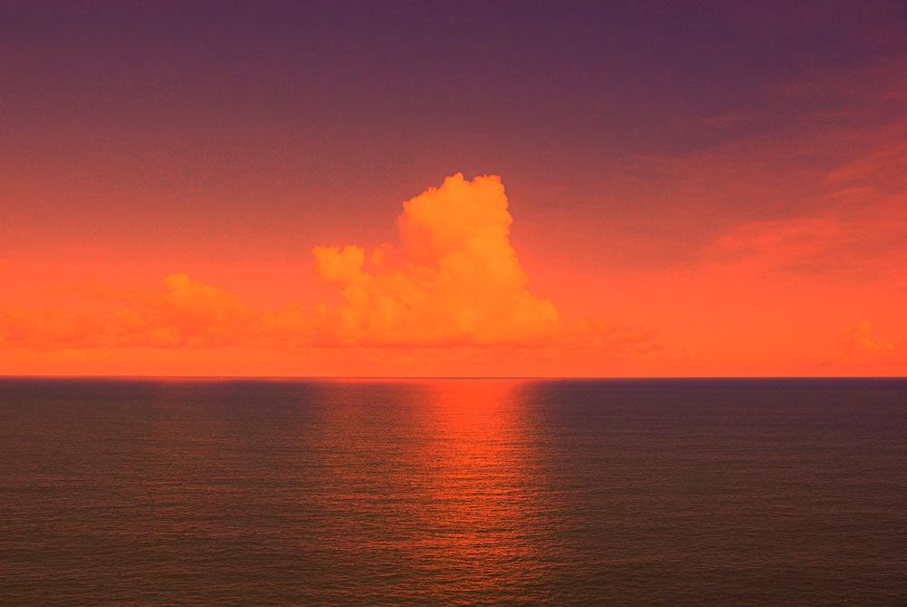 |
| 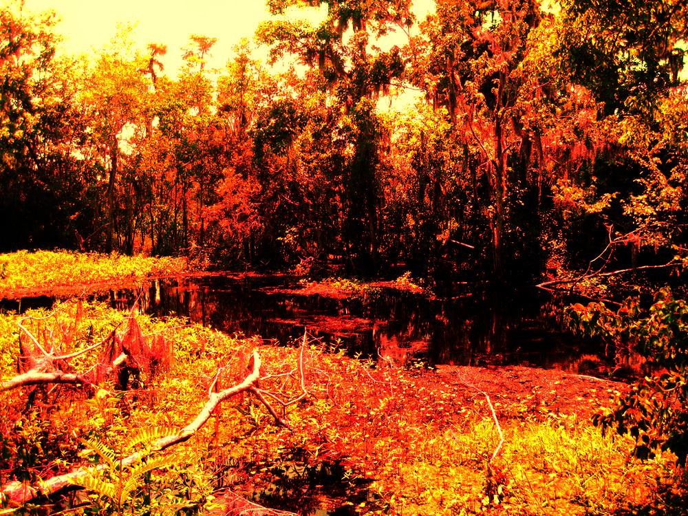 | |
|
Step 1: Convert the input images from RGB to Lab color space
Step 2: Compute the Euclidean Lab color distance for neighboring pixels
Step 3: Construct equations for grayscale values such that difference in intensity between neighboring pixels equals Lab color distance
Step 4: Solve the linear equations to get the grayscale values of each pixel
The conversion algorithm used here is different from that of Part 1. The main reason is that even though the conversion works for Part 1, the range of mapping is not normalized. This distorts the Euclidean distance which is a crucial part of the decolorization algorithm.
Instead, the RGB colors are first converted into CIEXYZ space, which is then converted into CIELAB space. Standard methods were applied.
Reference: http://en.wikipedia.org/wiki/SRGB, http://en.wikipedia.org/wiki/Lab_color_space
To solve the system of linear equations, we first represent the grayscale image with an mxn vector G, where each element corresponds the intensity at a pixel.
Then, we construct a sparse matrix A that represents the equations. Each pixel has two neighbors, so there are 2mn rows in the sparse matrix.
As the target, we represent the Lab color distance for each pair of neighbors with vector Delta.
The equation becomes: AG=Delta. There are two ways to solve the system via MATLAB, either "pinv()" to invert the matrix A, or to solve directly with "mldivide \".
In theory, the two methods should generate the same output. However, in practice, their performance are extremely different.
For a 50x50 image, pinv() took 21.25s while "\" took merely 0.0084s. Furthermore, when trying pinv() on a 100x100 image, the computer simply doesn't have enough storage space. In no way should pinv() be used for this task.
The reason is that computing matrix invesre is prohibitively expensive. Time complexity is O(n^3). Also, it takes O(n^2) memory space. Meanwhile, "\" employs various matrix decomposition techniques that not only preserves the sparsity of the matrix, but also runs in O(n^2) time. In our case here, for a mxn image, running time is O(m^3 n^3) vs O(m^2 n^2) respectively, hence the tremendous time saved with "\"
Reference: http://en.wikipedia.org/wiki/Computational_complexity_of_mathematical_operations, http://www.mathworks.com/help/matlab/ref/mldivide.html
Step 1: Convert the input images from RGB to Lab color space
Step 2: Compute the Euclidean Lab color distance for neighboring pixels
Step 3: Count the number of pairs of neighbors with distance above given threshold
Step 4: Among those pairs counted in step 3, count the number of pairs where the grayscale also exceeds the threshold
Step 5: Output Color Contrast Preserving Ratio (CCPR), which is the proportion of value from step 4 out of the value from step 3.
| Source | Decolorized | CCPR |
| 0.1765 | ||
| 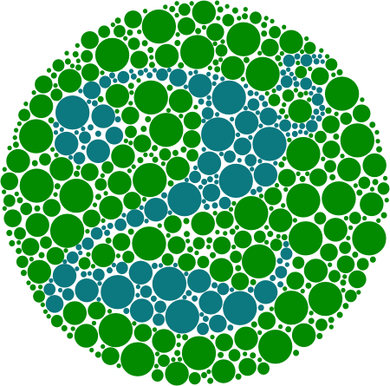 | 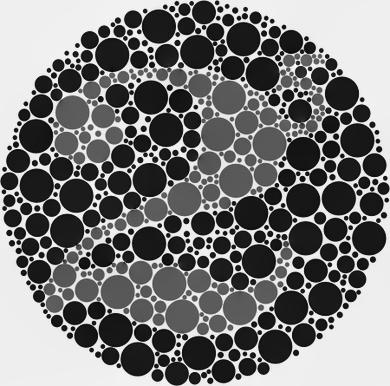 | 0.6021 |
 | 0.3968 | |
 | 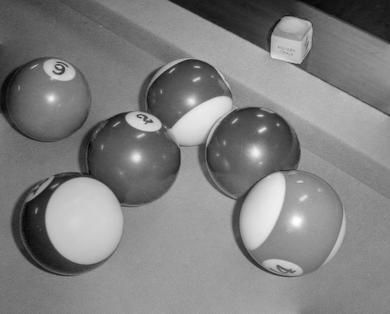 | 0.2718 |
 | 0.3235 | |
 | 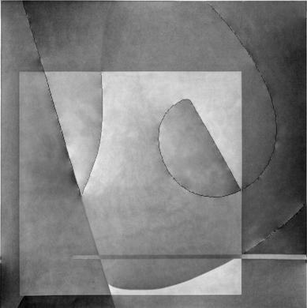 | 0.3979 |
 | 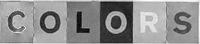 | 0.5881 |
| 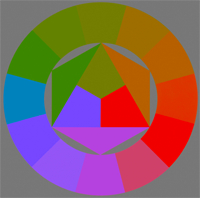 | 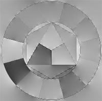 | 0.4514 |
 | 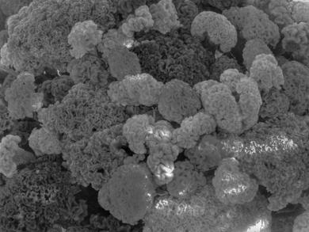 | 0.1721 |
 | 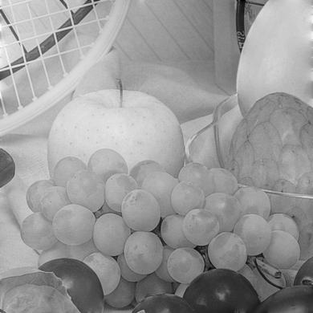 | 0.2484 |
The basic algorithm above determines the color order through the L channel of the image in Lab space. While this works well for colors that are strongly ordered (i.e. one color exceeds another in all three R,G,B channels), it imposes order on other pairs that human don't really distinguish which is "brighter". For example, different people may perceive the intensities of yellow and green differently, so there is not a really definitive order how these two colors should be arranged. As a result, the output from the above algo is uncessarily restricted.
We would like to implement a new method that removes the requirement on strict ordering of color, i.e. a weak color ordering. This would allow more degree of freedom in decolorization, thus a better output with respect to human vision.
Reference: http://www.cse.cuhk.edu.hk/~leojia/papers/decolorization_ijcv14.pdf
We define a parametric decolorization function with 9 polynomial terms: r,g,b,rg,rb,gb,r^2,g^2,b^2, and we let grayscale image g to be a weighted average of these 9 sub-images.
To find the best fit, we define an Energy function for each neighbor pair. We assume the grayscale difference of two pixels follow Normal Distribution with mean = Lab color distance, and the value of the Energy function is given by the probability density function.
However, for color pairs without a strong order relationship, we allow either mean = positive or negative of the Lab color distance with equal probability.
Energy function of the image is the product of the energy functions for every neighbor pair. The parameters to this function are the 9 sub-image weights. We try to minimize the Energy function by adjusting the weights.
This is done by taking derivative of the Enery function with respect to the weights and set it to zero, thus obtaining 9 equations.
However, the equations are not linear, so we have to use recursion (fixed-point method) to approximate the solution.
| Source | Decolorized | CCPR |
| 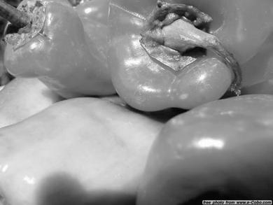 | 0.2716 | |
| 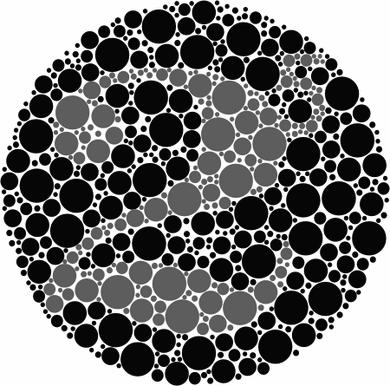 | 0.6036 | |
| 0.4329 | |
| 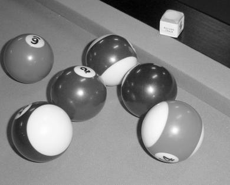 | 0.3031 |
| 0.4480 | |
| 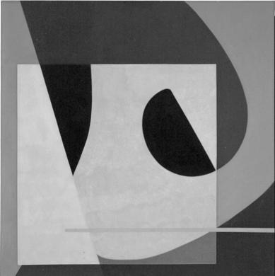 | 0.3820 |
| 0.5445 | |
 | 0.3860 | |
| 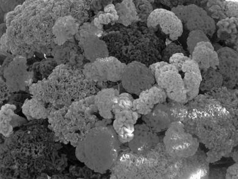 | 0.2036 |
| 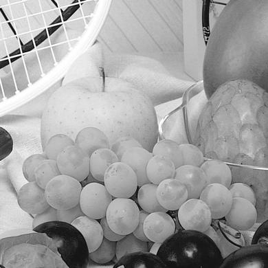 | 0.3908 |
Notice that the CCPR values are generally higher, the contrast of the images are better.
More importantly, there is no artifact around the edges, which was particularly noticeable for pictures 6,7,8 in basic implementation.
| CCPR | Basic | WOC | rgb2gray |
|---|---|---|---|
| 1 | 0.1765 | 0.2716 | 0.3008 |
| 2 | 0.6021 | 0.6036 | 0.5800 |
| 3 | 0.3968 | 0.4329 | 0.4756 |
| 4 | 0.2718 | 0.3031 | 0.3119 |
| 5 | 0.3235 | 0.4480 | 0.4397 |
| 6 | 0.3979 | 0.3820 | 0.1867 |
| 7 | 0.5881 | 0.5445 | 0.2003 |
| 8 | 0.4514 | 0.3860 | 0.0647 |
| 9 | 0.1721 | 0.2036 | 0.2531 |
| 10 | 0.2484 | 0.3908 | 0.3830 |
| Time | Basic | WOC | rgb2gray |
|---|---|---|---|
| 1 | 1.0875 | 0.7643 | 0.0011 |
| 2 | 1.2253 | 1.0194 | 0.0009 |
| 3 | 0.8818 | 0.6879 | 0.0008 |
| 4 | 0.8943 | 0.8112 | 0.0010 |
| 5 | 1.3263 | 0.9253 | 0.0011 |
| 6 | 1.2264 | 1.0301 | 0.0002 |
| 7 | 0.0477 | 0.0449 | 0.0003 |
| 8 | 0.2483 | 0.1604 | 0.0006 |
| 9 | 0.9351 | 0.7768 | 0.0010 |
| 10 | 1.2549 | 1.0229 | 0.0012 |
We see that the Weak Color Order Contrast Preserving Decolorization algorithm not only achieves better overall performance than the basic implementation, its computation time is also shorter.
Still, these two methods are in no match in terms of computation time compared to the MATLAB defined rgb2gray function.
However, while MATLAB's method usually generates decolorization with comparable quality as the other two methods, in certain cases when the color intensities are close, the result becomes unacceptable.
Therefore, the WCO method is still recommended.
| Source | Ours | MATLAB |
| 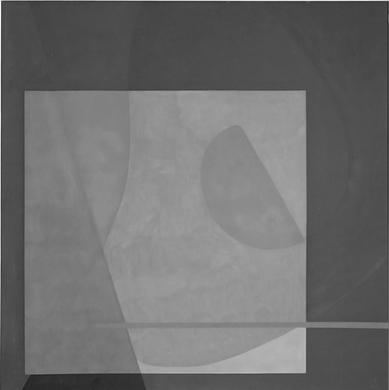 | |
| ||
|
1. http://www.cs.utah.edu/~shirley/papers/ColorTransfer.pdf
2. http://en.wikipedia.org/wiki/SRGB
3. http://en.wikipedia.org/wiki/Lab_color_space
4. http://en.wikipedia.org/wiki/Computational_complexity_of_mathematical_operations
5. http://www.mathworks.com/help/matlab/ref/mldivide.html
http://www.cse.cuhk.edu.hk/~leojia/papers/decolorization_ijcv14.pdf